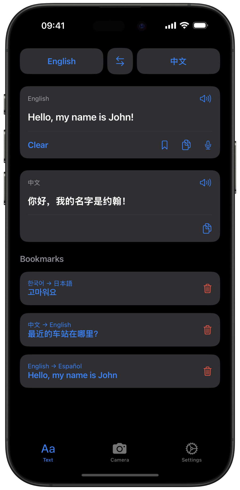
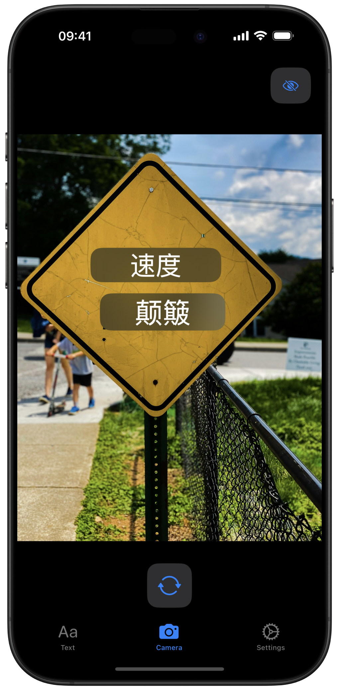
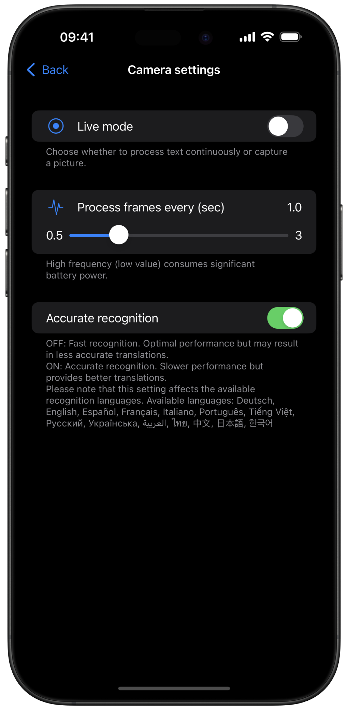

Live Offline Translation
The app provides real-time translation through camera and photo text recognition, enabling users to translate text instantly by pointing their camera at it.
Key features include:
- Offline translation for up to 58 languages
- Translate text, voice input, using camera and video recognition
- Make bookmarks to remember translations and quickly input text
- Dynamic show/hide of translated text



Available platforms: iOS, iPadOS (macOS compatible) Languages: Swift
Stack: SwiftUI, AVFoundation, Google ML Kit, Speech, Vision